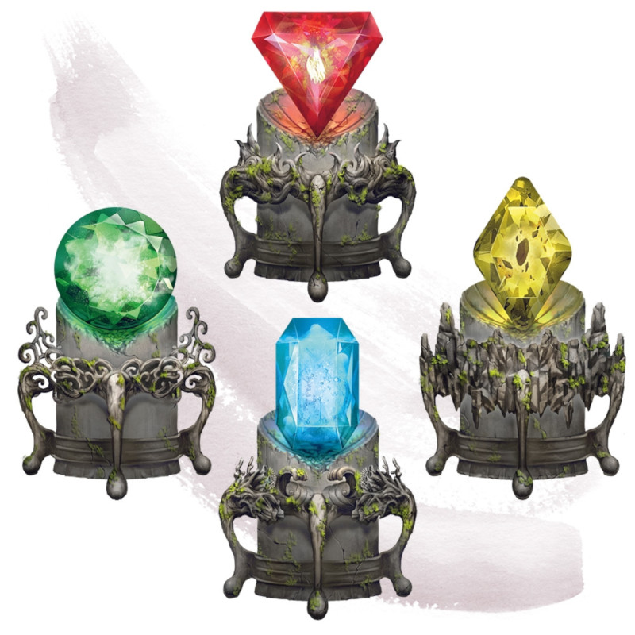

Gemme élémentaire
[ Elemental Gem ]
Objet merveilleux, peu commun
Cette gemme contient un brin d'énergie élémentaire. Lorsque vous utilisez une action pour briser la gemme, un élémentaire est invoqué comme si vous aviez jeté le sort invocation d'élémentaire, et la magie de la gemme est perdue. Le type de gemme détermine l'élémentaire invoqué par le sort.
| Gemme | Élémentaire invoqué |
|---|---|
| Saphir bleu | Élémentaire de l'air |
| Diamant jaune | Élémentaire de la terre |
| Corindon rouge | Élémentaire du feu |
| Émeraude | Élémentaire de l'eau |
Dungeon Master´s Guide (SRD)
